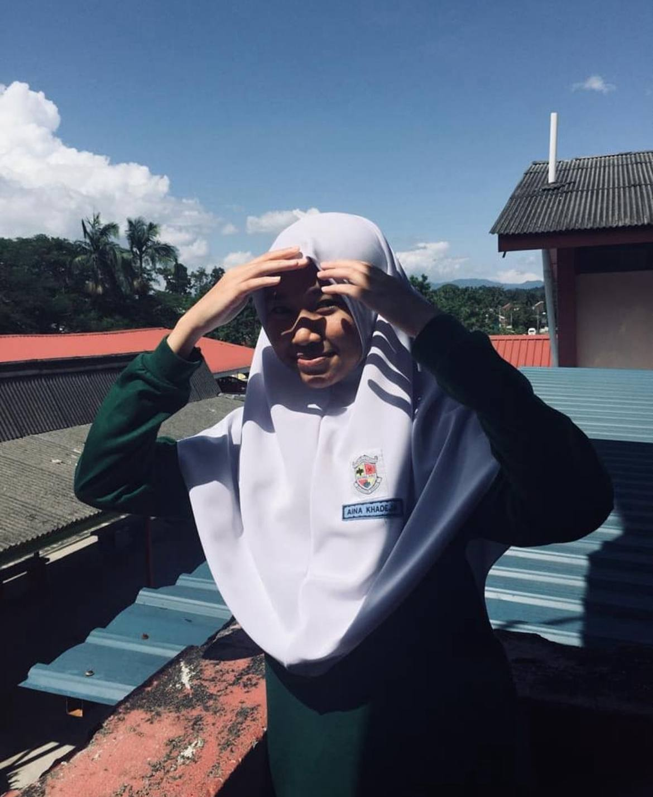
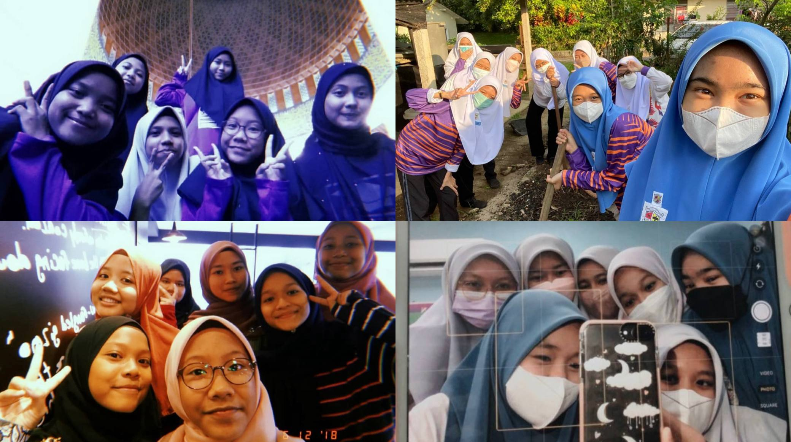
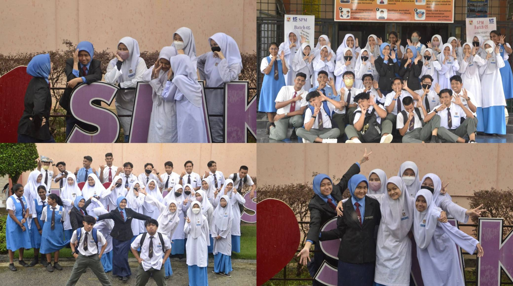

DEEJA | EDUCATION
This is where all my stress originally came from.

Learning, growing, evolving.
My Education
I have dedicated to my studies since I was young, and each stage of my education has shaped who I am today. Here is a little overview of my academic journer:
PRIMARY SCHOOL
2011
This is where I built my foundation, learned new things, and developed confidence in myself.
2012 - 2017
Another important part of my primary years, filled with new experiences and growth.
SECONDARY SCHOOL
SMK Syed Mashor
2018 - 2023
Back in my lower secondary school years (form 1 to form 3), I was in KAA class (Kelas Aliran Arab). In this class, we had to take extra subjects such as Arabic Language and Quranic Proficiency. Those three years were truly meaningful to me because I grew very close to my classmates. Three years may sound short, but the memories felt endless..from laughing together, sharing notes, praying in jamaah, eating together, and going through every little moment as a group. I genuinely treasure the friendships I built there.
During my upper secondary (form 4 and form 5), I took Computer Science and Agricultural Science for my SPM. These two subjects made my school life felt really balanced because some days I would spend my time in the computer lab, and on other days I would be in the planting garden learning about plants and agricultural practices.
For me, my secondary school days were the best moments. I truly enjoyed my time at SMK which I met many people, made new friends, and experienced so much. I created memories that can never be rewound or replaced.
I miss my highschool era :<

Beautiful souls I met along the way.

My SPM survival team.
After completing my SPM, I was delighted with my results, which I can proudly say were quite good. It was a rewarding moment that reflected all the effort, hard work, and dedication I had put into my studies paying off!
Here is my full SPM result:
| NUMBER | CODE | SUBJECTS | GRED | PERFORMANCE BAND |
| 1) | 1103 | BAHASA MELAYU | B+ | KEPUJIAN TERTINGGI |
| 2) | 1119 | BAHASA INGGERIS | A- | CEMERLANG |
| 3) | 1223 | PENDIDIKAN ISLAM | A | CEMERLANG TINGGI |
| 4) | 1249 | SEJARAH | B | KEPUJIAN TINGGI |
| 5) | 1449 | MATEMATIK | B+ | KEPUJIAN TERTINGGI |
| 6) | 1511 | SAINS | A- | CEMERLANG |
| 7) | 3729 | PERTANIAN | A | CEMERLANG TINGGI |
| 8) | 3770 | SAINS KOMPUTER | C | KEPUJIAN |
DIPLOMA
UiTM Kampus Segamat
Oct 2023 - 2026
- Semester 1: 3.54
- Semester 3: 3.70
- Semester 4: 3.72
I was a little disappointed that I didn't make the Dean's List in Semester 2, which meant my chance to earn the 'selempang pink' was gone. But the sadness didn't last long, life goes on! And it motivated me even more. Now, my focus is clear, I aim to finish my diploma with "TS" and make myself proud :p